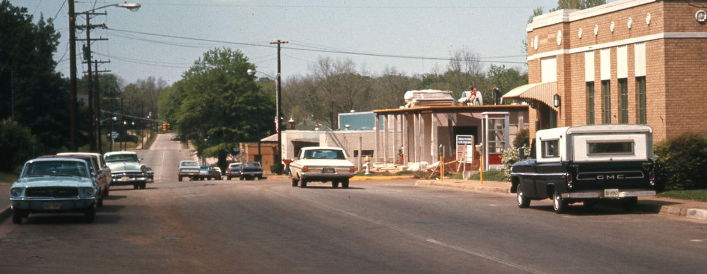

"The British are Back1"
Queen
Queen are a British rock band that formed in London in 1970. Their classic line-up was Freddie Mercury (lead vocals, piano), Brian May (lead guitar, vocals), Roger Taylor (drums, vocals), and John Deacon (bass guitar). Queen's earliest works were influenced by progressive rock, hard rock and heavy metal, but the band gradually ventured into more conventional and radio-friendly works by incorporating further styles, such as arena rock and pop rock, into their music.Queen first charted in the UK with their second album, Queen II, in 1974, but it was the release of Sheer Heart Attack later that year and A Night at the Opera in 1975 which brought them international success. The latter featured "Bohemian Rhapsody", which stayed at number one in the UK for nine weeks and popularised the music video.
The band's 1977 album News of the World contained "We Will Rock You" and "We Are the Champions", which have become anthems at sporting events. By the early 1980s, Queen were one of the biggest stadium rock bands in the world. Released in 1980, "Another One Bites the Dust" is their best selling single, while their 1981 compilation album Greatest Hits is the best-selling album in the UK and is certified eight times platinum in the US. Their performance at the 1985 Live Aid concert has been ranked among the greatest in rock history by various music publications, and the best in a 2005 industry poll. In 1991, Mercury died of bronchopneumonia, a complication of AIDS, and Deacon retired in 1997. Since then, May and Taylor have occasionally performed together.
The band have released a total of 18 number-one albums, 18 number-one singles, and 10 number-one DVDs. Estimates of their record sales generally range from 150 million to 300 million records, making them one of the world's best-selling music artists. Queen received the Outstanding Contribution to British Music Award from the British Phonographic Industry in 1990. They were inducted into the Rock and Roll Hall of Fame in 2001.
The Ramones
The Ramones were an American punk rock band that formed in the New York City neighborhood of Forest Hills, Queens, in 1974. They are often cited as the first band to define the punk-rock sound. Despite achieving only limited commercial success, the band was a major influence on the 1970s punk movement in both the United States and United Kingdom.All of the band members adopted pseudonyms ending with the surname "Ramone", although none of them were related. They performed 2,263 concerts, touring virtually nonstop for 22 years. In 1996, after a tour with the Lollapalooza music festival, the band played a farewell concert and disbanded. By 2014, all four of the band's original members, lead singer Joey Ramone (1951-2001), bass guitarist Dee Dee Ramone (1951-2002), lead guitarist Johnny Ramone (1948-2004) and drummer Tommy Ramone (1949-2014), had died.
Recognition of the band's importance built over the years, and they are now mentioned in many assessments of all-time great rock music, such as number 26 in the Rolling Stone Magazine list of the "100 Greatest Artists of All Time" and number 17 in VH1's "100 Greatest Artists of Hard Rock". In 2002, the Ramones were ranked the second-greatest band of all time by Spin magazine, trailing only the Beatles. On March 18, 2002, the original four members and Tommy's replacement on drums, Marky Ramone, were inducted into the Rock and Roll Hall of Fame. In 2011, the group was awarded a Grammy Lifetime Achievement Award.

"The Failed Band with a Lasting Influence"

"Piano Man"
Billy Joel
William Martin "Billy" Joel (born May 9, 1949) is an American singer-songwriter and pianist. Since releasing his first hit song, "Piano Man", in 1973, Joel has become the sixth best-selling recording artist and the third best-selling solo artist in the United States. His compilation album Greatest Hits Vol. 1 & 2 is one of the best-selling albums in the US.Joel had Top 40 hits in the 1970s, 1980s, and 1990s, achieving 33 Top 40 hits in the US, all of which he wrote himself. He is also a six-time Grammy Award winner who has been nominated for 23 Grammy Awards. He has sold more than 150 million records worldwide, making him one of the best-selling artists of all time.
Joel was inducted into the Songwriters Hall of Fame (1992), the Rock and Roll Hall of Fame (1999), and the Long Island Music Hall of Fame (2006). In 2001, Joel received the Johnny Mercer Award from the Songwriters Hall of Fame. In 2013, Joel received the Kennedy Center Honors, the nation's highest honor for influencing American culture through the arts. With the exception of the 2007 songs "All My Life" and "Christmas in Fallujah", Joel stopped writing and releasing pop/rock material after 1993's River of Dreams. However, he continues to tour, and he plays songs from all eras of his solo career.